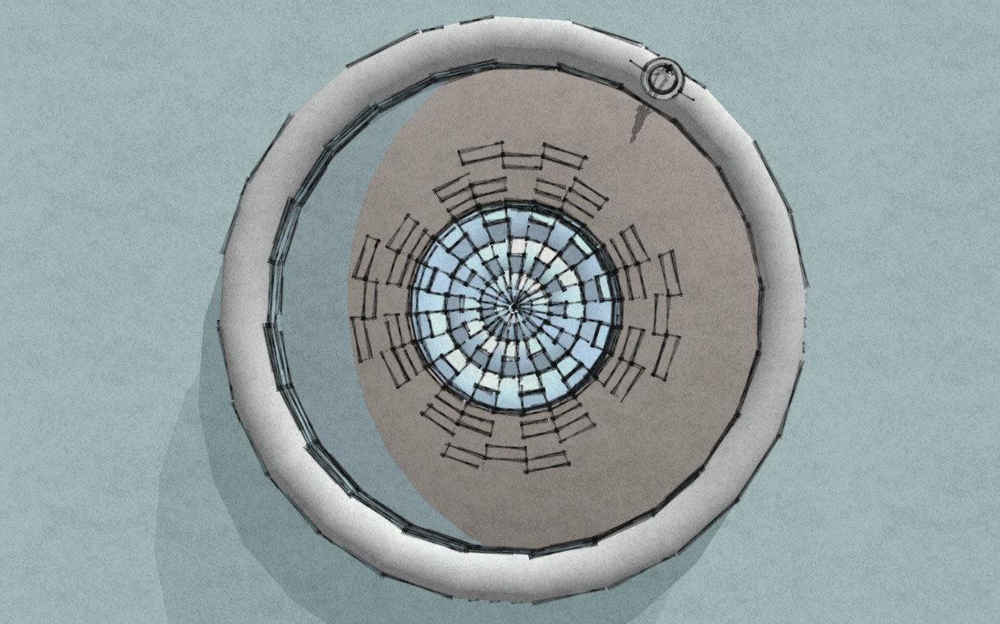
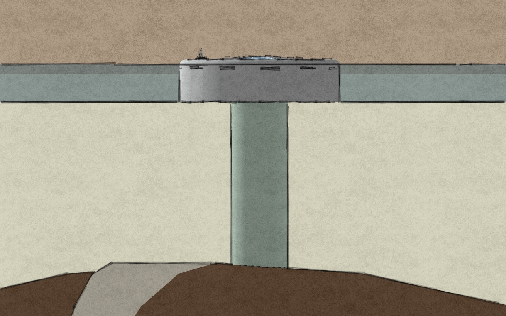
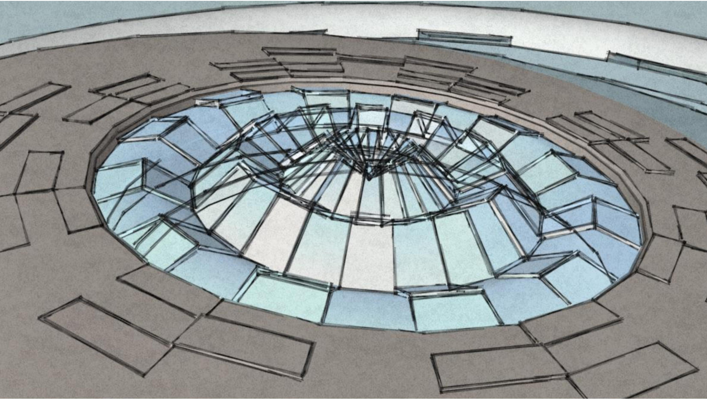
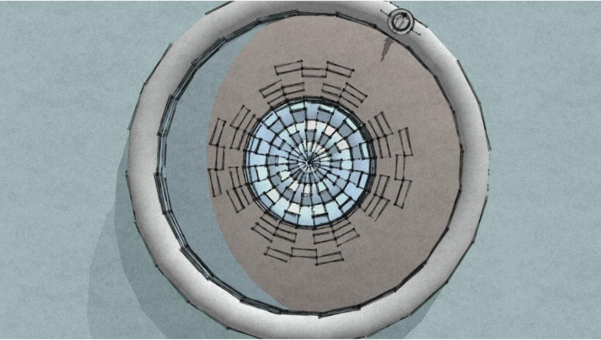

Spirit Eye of skwácháýs
co-created with Joshua Ngenda · BIDC Public Art Intensive, June 2025 · Best Public Art Concept and Council's Choice

"imagining essential infrastructure as art"
"basic human need for light & nature"
Joshua Ngenda and I wrote it into Spirit Eye.

Spirit Eye of skwácháýs, a cross-section. 2025. The lens sits on the surface and a column carries its light down to a forest garden underground.

Centering art as infrastructure, the human need for light and nature, a forest garden that both sustains life and materials for creation.
The understory

layered structure mimicking natural forest structure with large cedar cottonwood and fir trees around the outside, with an understory and inner wetland that maximizes biodiversity with an emphasis on plants that feed that community, support cultural practices and support creation.
a forest garden ecosystem that takes elements of how the area existed prior to 1850 while also introducing non native plants that support life and creation.

Framed within nature. The forest garden concept. Where it's developed in a way that considers what it will Become 100-300-1000 years from now.

Human centred art as infracture, ecosytem where possible